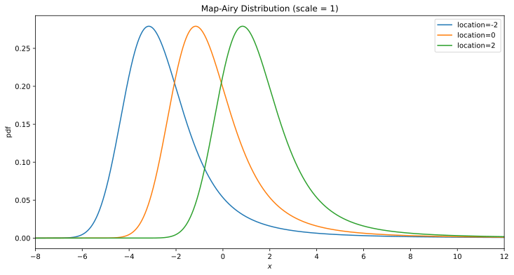
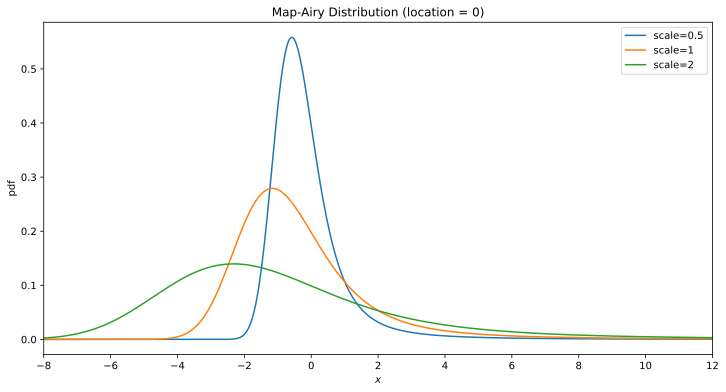
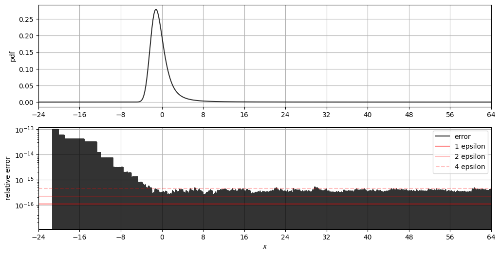
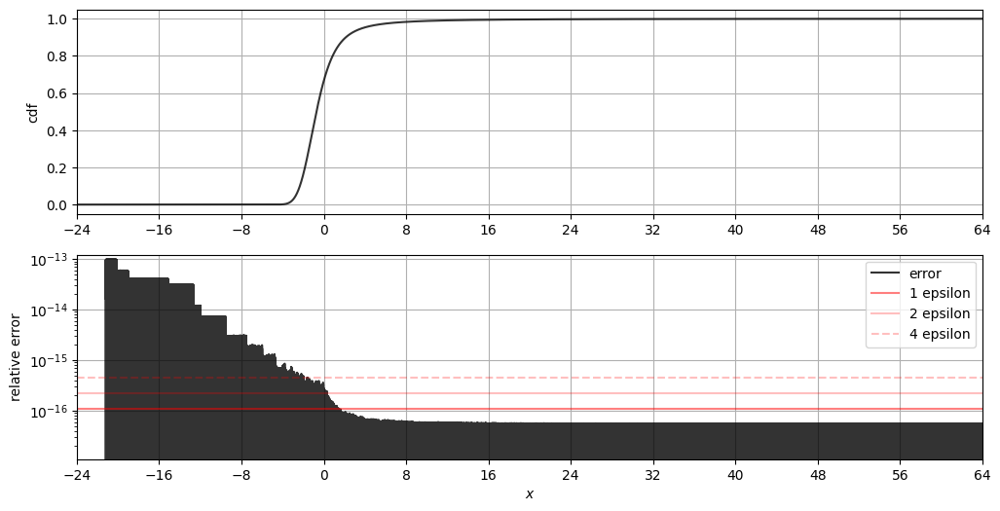
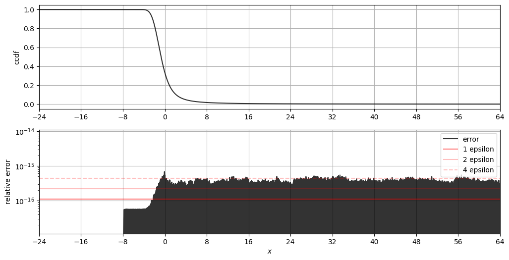

|
Home | Libraries | People | FAQ | More |


#include <boost/math/distributions/mapairy.hpp>
template <class RealType = double, class Policy = policies::policy<> > class mapairy_distribution; typedef mapairy_distribution<> mapairy; template <class RealType, class Policy> class mapairy_distribution { public: typedef RealType value_type; typedef Policy policy_type; BOOST_MATH_GPU_ENABLED mapairy_distribution(RealType location = 0, RealType scale = 1); BOOST_MATH_GPU_ENABLED RealType location()const; BOOST_MATH_GPU_ENABLED RealType scale()const; };
It is special case of a stable distribution with shape parameter α=3/2, β=1.
This distribution is also defined as β = −1, which is inverted about the x-axis.
probability distribution function PDF given by:
The location parameter μ is the location of the distribution, while the scale parameter [c] determines the width of the distribution. If the location is zero, and the scale 1, then the result is a standard map-airy distribution.
The distribution describes the probability distribution of the area under a Brownian excursion over a unit interval.
The following graph shows how the distributions moves as the location parameter changes:

While the following graph shows how the shape (scale) parameter alters the distribution:

BOOST_MATH_GPU_ENABLED mapairy_distribution(RealType location = 0, RealType scale = 1);
Constructs a mapairy distribution, with location parameter location and scale parameter scale. When these parameters take their default values (location = 0, scale = 1) then the result is a Standard map-airy Distribution.
Requires scale > 0, otherwise calls domain_error.
BOOST_MATH_GPU_ENABLED RealType location()const;
Returns the location parameter of the distribution.
BOOST_MATH_GPU_ENABLED RealType scale()const;
Returns the scale parameter of the distribution.
All the usual non-member accessor
functions that are generic to all distributions are supported:
Cumulative Distribution Function,
Probability Density Function,
Quantile, Hazard Function, Cumulative Hazard Function,
__logcdf, __logpdf, mean,
median, mode,
variance, standard deviation, skewness, kurtosis,
kurtosis_excess,
range and support. For this distribution
all non-member accessor functions are marked with BOOST_MATH_GPU_ENABLED
and can be run on both host and device.
Note however that the map-airy distribution does not have a skewness, kurtosis, etc. See mathematically undefined function to control whether these should fail to compile with a BOOST_STATIC_ASSERTION_FAILURE, which is the default.
Alternately, the functions skewness, kurtosis and kurtosis_excess will all return a domain_error if called.
The domain of the random variable is [-[max_value], +[min_value]].
The error is within 4 epsilon except for the rapidly decaying left tail.
Errors in the PDF at 64-bit double precision:

Errors in the CDF at 64-bit double precision:

Errors in the CDF-complement at 64-bit double precision:

See references.